5
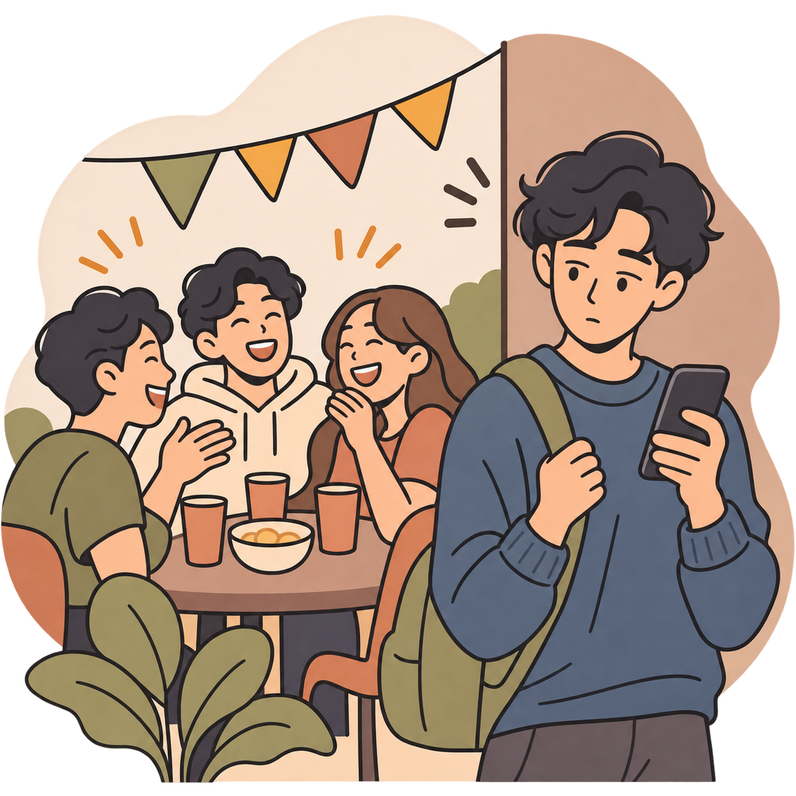
SOCIAL LIFE01
Social Life
Wondering why you're not at the gathering, the hangout, or the conversation everyone seems to be having.
A quiet exploration of the fear that life is happening elsewhere—and the feeling that you might be missing it.
SCROLL TO FEEL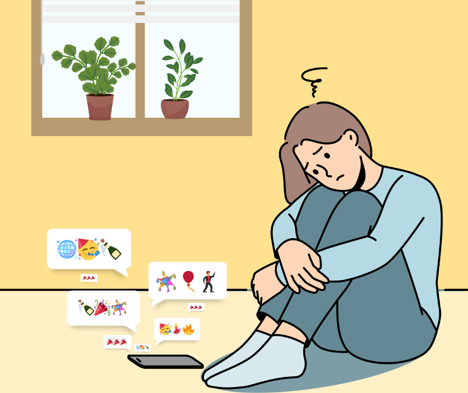
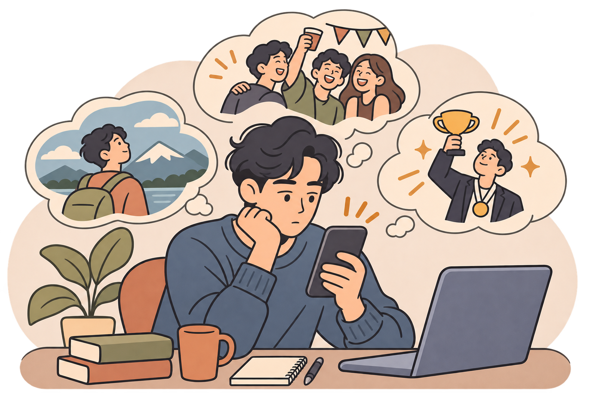
A FEELING OF BEING LEFT OUT
The Fear of Missing Out is a feeling of anxiety that others are having rewarding experiences while you are absent—often accompanied by the urge to stay connected and check what others are doing.
It can turn an ordinary moment into a question: “Am I missing something better?”
Explore the mechanism ↘A moment of uncertainty can become a repeating pattern. Tap each stage to see how the loop feeds itself.
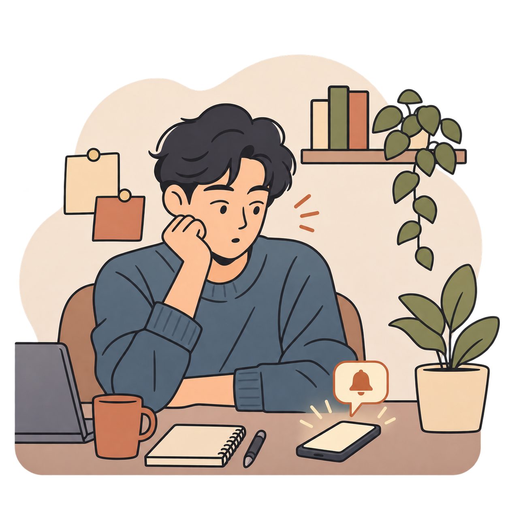
A notification, photo, conversation, or unexpected update catches your attention. Something makes you wonder what is happening beyond your current moment.
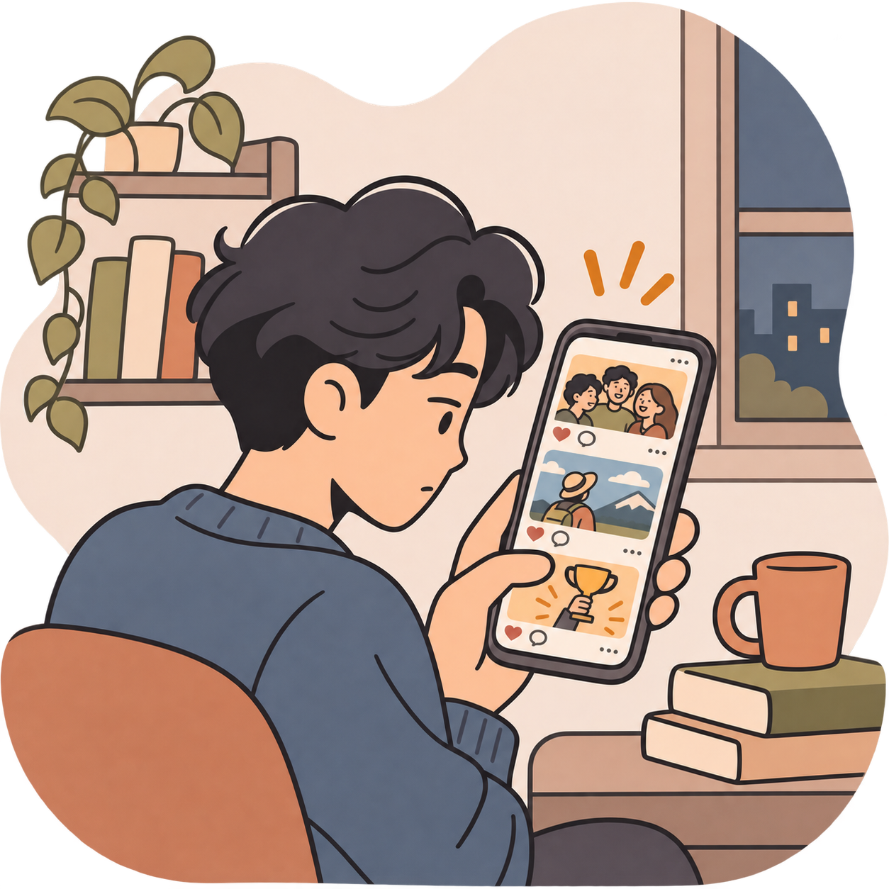
DIGITAL LIFE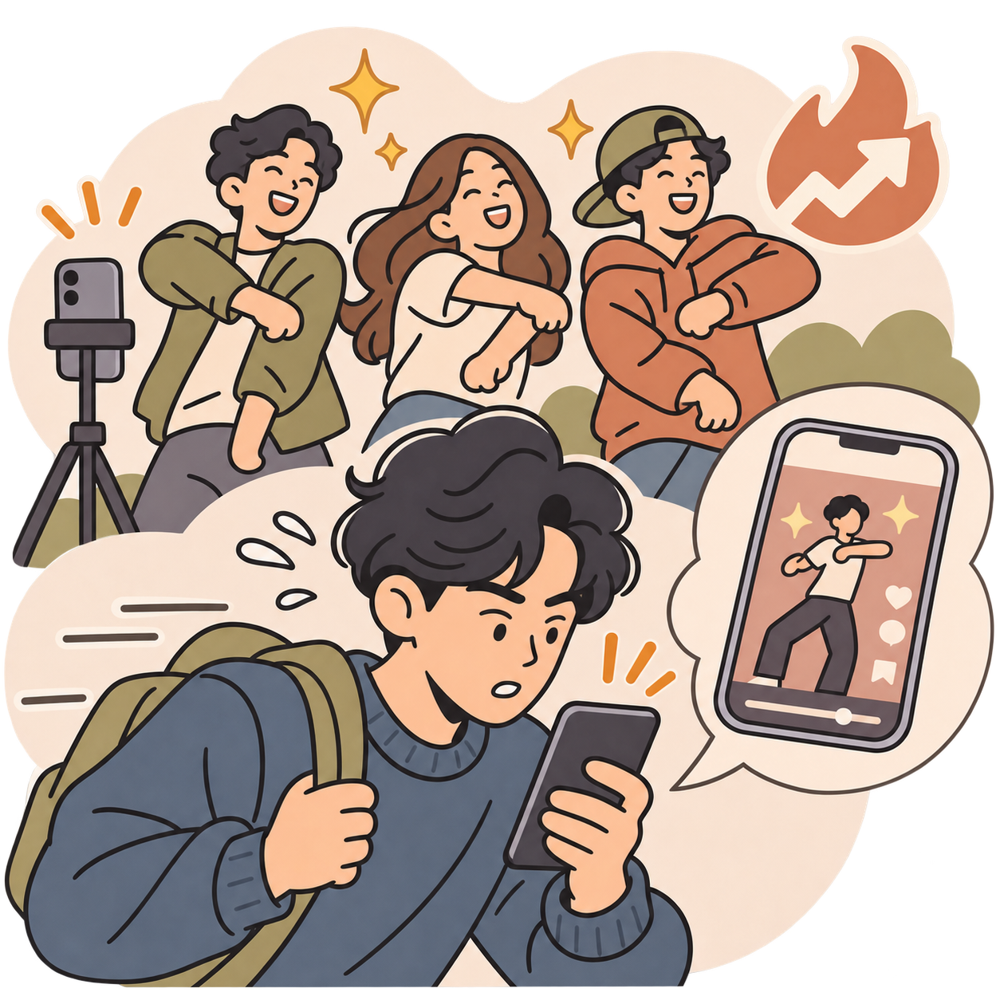
TRENDS & EXPERIENCESFoMO can grow from ordinary human needs and social cues. These three lenses help make sense of the feeling; they are not labels or a diagnosis.
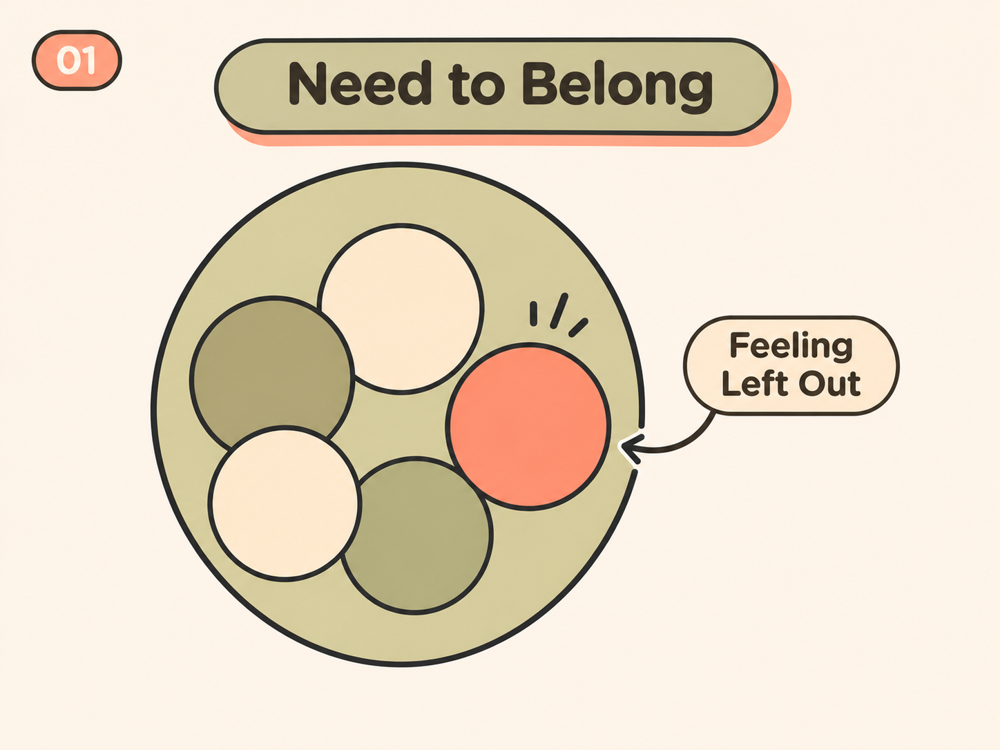
Feeling included matters. When a group makes plans without you, a chat goes quiet, or you see a photo after the fact, it can stir worry about where you stand. That worry is a signal that connection matters to you; by itself, it does not prove that anyone meant to leave you out.
What do I know for sure—and what am I filling in from a post or a silence?
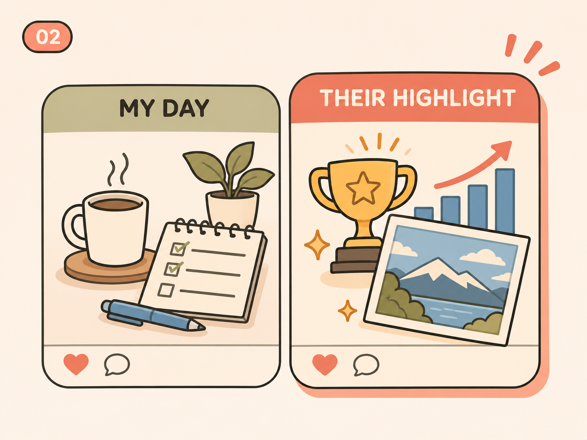
We experience our own full, unedited day, but often see only selected moments from someone else's. Comparing the two can make our pace, friendships, or progress seem lacking, even when we do not know the context behind what was posted.
What part of their story—and mine—is missing from this comparison?
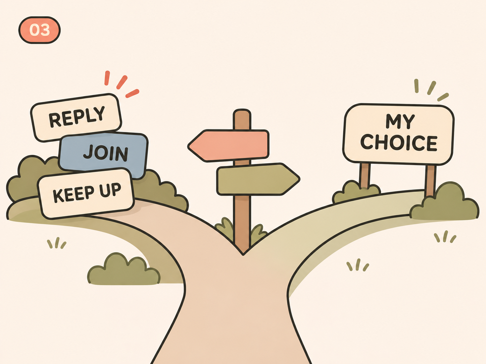
Sometimes nobody directly asks us to reply immediately, attend every plan, try every trend, or hit the same milestone. The expectation can still feel real. That can make an ordinary choice feel urgent, even when we have room to pause and decide what actually matters to us.
If nobody else could see my choice, what would I want to do?
NOTICE THE CUE · NAME THE NEED · CHOOSE YOUR NEXT STEP
Culture can shape how people understand belonging, independence, relationships, and social expectations. Explore two broad lenses—not boxes to put people in.
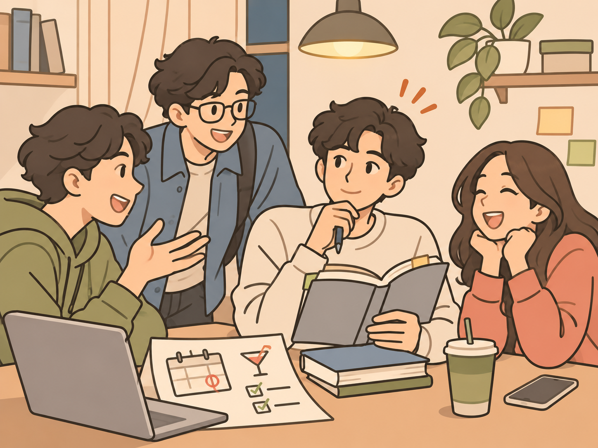
Emphasis may be placed on group harmony, relational responsibility, shared identity, and sensitivity to how choices affect others.
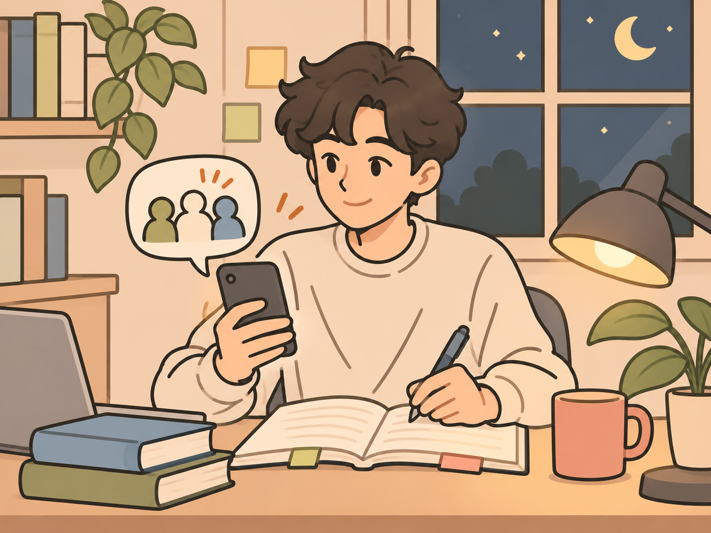
Emphasis may be placed on personal goals, autonomy, individual preference, and expressing a distinct sense of self.
These are broad cultural orientations, not fixed personality types. People can value both community and autonomy, and cultural context is diverse, changing, and nuanced.
How we see ourselves can shift between personal priorities and the people around us. Take a moment to notice which perspective feels closer right now.
Your choice could affect your personal goals and the people close to you. Which thought feels more present for you right now?
The post shows the laughter. Outside the frame: time, money, planning, and cleanup. FoMO can grow when we compare our everyday lives with someone else’s best moment.
Think about the past few weeks. Select every experience that has felt familiar to you; there are no right or wrong answers.
YOUR ANSWERS STAY ON THIS PAGEChoose all that fit your recent experience.
This percentage only reflects your selections. It is not a FoMO score or diagnosis.
A post can make checking feel urgent. This short reset helps you sort what you know, decide what you want, and put your attention back where you choose.
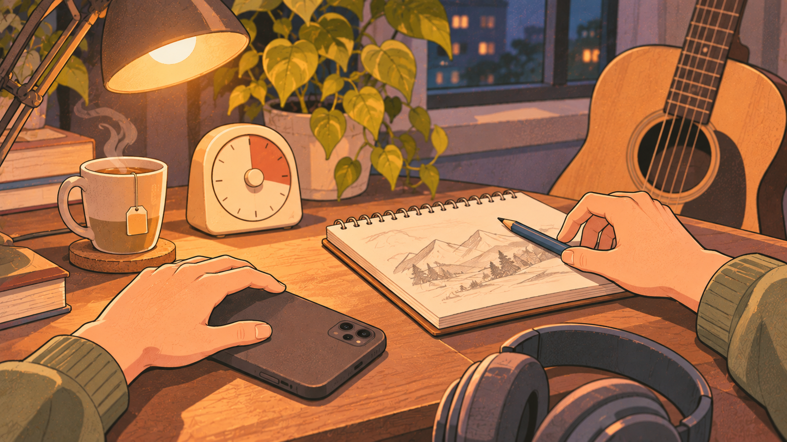
A notification, an invite, or a post? Naming it helps you catch the moment before opening another app.
It shows one selected moment, not the full day. Separate what you can see from what you’re assuming.
If yes, message someone and make a plan. If not, skip it without keeping the feed open to watch.
Put your phone away for ten minutes and return to a person, task, or activity. If one account often triggers comparison, mute it or check it less.
TAKE THE STEP THAT FITS YOU. THIS IS A REFLECTION TOOL, NOT A RULEBOOK.
When a post makes you feel behind, name what it brought up—or write one thing you want to give your attention to instead. Send the note to pin it here as a reminder. There’s no right answer.
STAYS ON THIS PAGE · CLEARS WHEN RELOADEDNo notes yet. Send one above and it will appear here.
Meet the team behind this project.
Not every moment needs to be witnessed.
Some moments are enough when you live them.